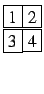
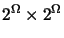
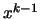
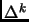
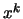

Next: Wavelet Pyramid
Up: Multiresolution
Previous: Multiresolution
Gaussian and Laplacian Pyramid
Figure 2.2:
Procedure for obtaining the Gaussian
() and Laplacian () pyramid images from
.
|  |
The basic approach of Burt and Adelson Gaussian pyramid Laplacian
pyramid is depicted in Figure
2.2. Let, be the gray level image at
resolution  and let represent the image at resolution
, which is obtained using the algorithm proposed in
[95]. An image at a given resolution is low pass
filtered so that the high spatial frequencies are removed, as a result we
can sample it at a lower rate (typically one half) and hence we have an
image of lower resolution and one half the size of the original image in
each dimension. This process of low pass filtering and sub-sampling
results
in images, which are at different resolutions. In addition, the difference
images,
at different resolutions are obtained by up-sampling the
coarse image by a factor of , interpolating it, and then subtracting
it from the next fine resolution image.
A suitable kernel for low pass filtering is used to obtain images at
different resolutions. If we assume a 1-D signal and the size of the
kernel to be , then as shown by Burt and Adelson [95] the
weights of the kernel, denoted by , , , ,
, should satisfy the following constraints,
-
(Normalizationnormalization),
- for
(Symmetrysymmetry) and
- if
, then must be satisfied (Equal
Contributionequal contribution).
Figure 2.3:
Gaussian pyramid () constructed using
the procedure depicted in Figure 2.2.
|
A  kernel from [95]
kernel from [95]
with , and , can be used to convolve
with the high resolution image ; the convolved image
is then down-sampled
(for example, selecting every alternate pixel along each
row and column) to obtain the image at lower resolution .
The process of obtaining the low resolution image and the difference image is
depicted in Figure 2.2, where the block
represents convolution with the kernel Ker and
represents
down-samplingdown sample by 2 (namely, considering only every
alternate sample of
the signal or in other words discarding every alternate sample of the
signal), and
represents up-samplingup sampling by (namely, introducing a
zero between every sample of the signal). Figure 2.3
depicts the Gaussian pyramid () and Figure 2.4
depicts that Laplacian pyramid () constructed using the
procedure shown in Figure 2.2. The leftmost
image in Figure 2.3 is the image of size
 at the finest resolution .
at the finest resolution .
Figure 2.4:
Laplacian pyramid constructed
using procedure depicted in Figure 2.2.
|
Next: Wavelet Pyramid
Up: Multiresolution
Previous: Multiresolution
2004-02-10